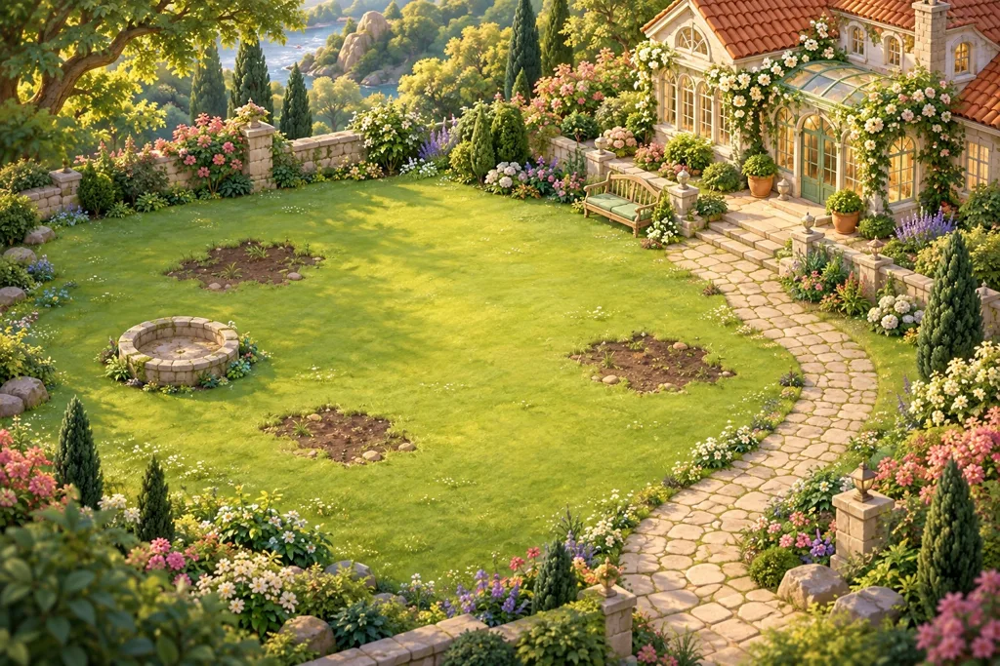

یک گوشه آرام، یک ماجرای تازه
اینجا، همهچیز دوباره شکوفه میدهد.
★۰ستاره●۰سکه
یک قدم تا شکوفههای تازه
مرحله ۱
۲۴حرکت باقیمانده
هدف این مرحله
امتیاز ۰دو مهره کنار هم را جابهجا کن

باغ کوچک من
فصل اول
دوباره، زندگی
هر ستاره، شروع یک تغییر کوچک است.
۰ از ۵ بازسازی